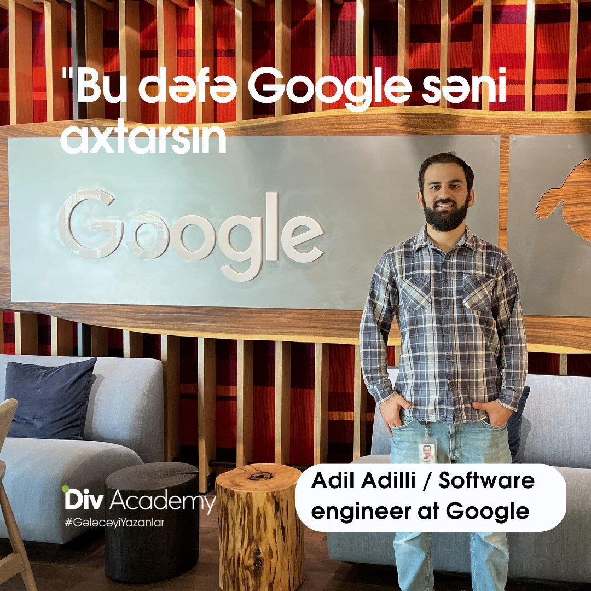
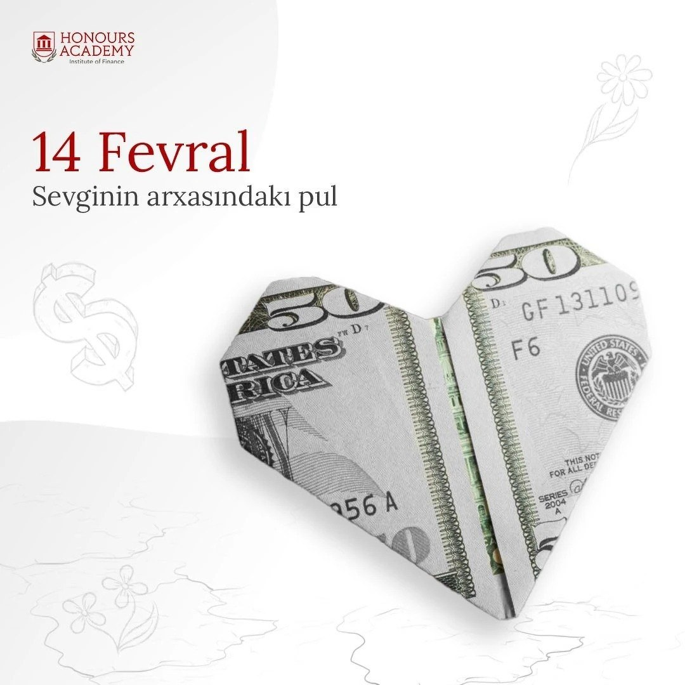
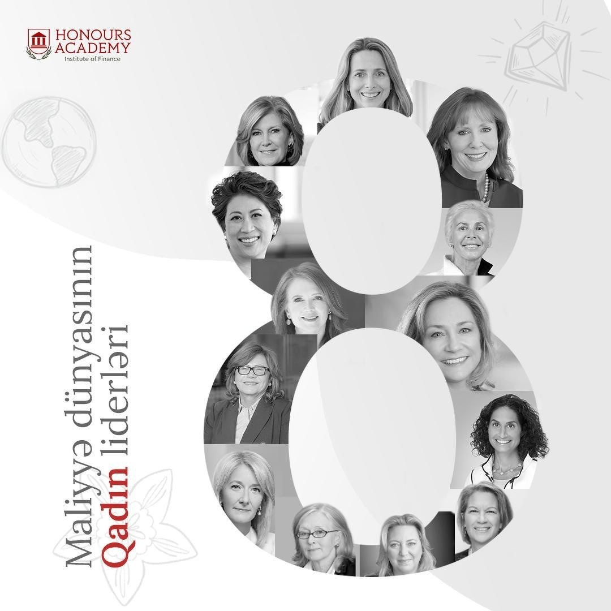
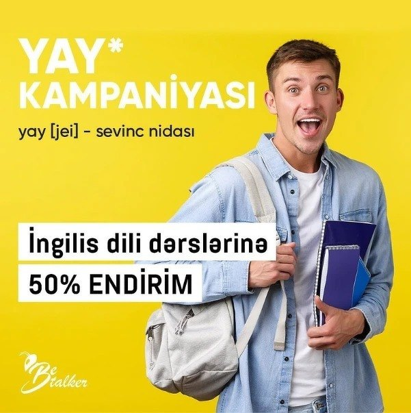
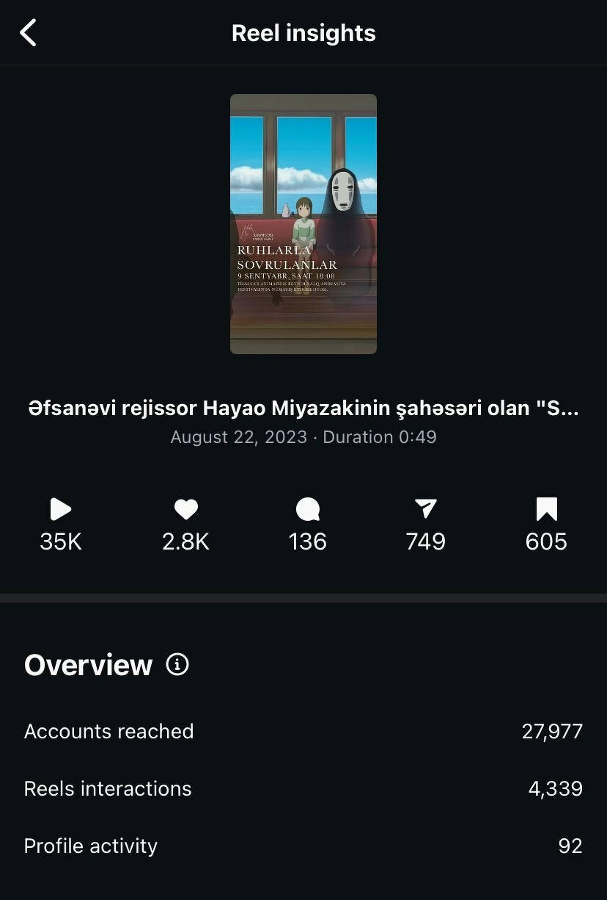
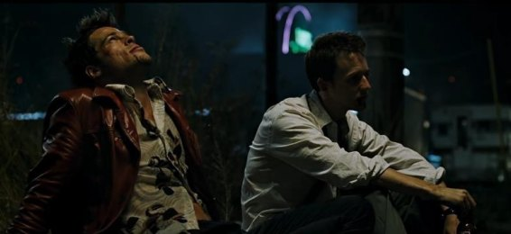

Campaigns written in Azerbaijani for education brands in Baku and for KYNO, the film platform I co-founded. The last two are spec concepts, written without a client.
For a seminar with a Google software engineer, I came up with the slogan “This time Google will search you.” It flips the usual idea of searching on Google into being “searched by Google,” which made the event instantly understandable and easy to remember.

Campaign visual.
What I did
Wrote the main slogan and supporting copy for the event announcement.
Shaped the message around career growth and global opportunities without sounding too salesy.
Result
200+ seminar registrations (above expectations).
Positive feedback on the slogan from attendees and marketing peers.
Valentine’s Day social media campaign for Honours Academy
I created a themed social post that tied Valentine’s Day to a finance angle. The idea was to keep it playful and scroll-stopping, but still teach something. The hook was simple: people spend money on Valentine’s Day, so let’s show the “money behind the love” in a way that fits the brand and doesn’t look like a generic stock post.

Campaign visual.
What I did
Came up with the concept and wrote the headline and caption: “February 14: The Money Behind the Love.”
Briefed the visual direction for the “origami heart made of money” design and worked with the designer to keep it clean and consistent with the page style.
Pulled 2–3 quick stats about Valentine’s Day spending to support the message and make it more than just a seasonal post.
Result
18% engagement rate (above the page average).
100+ new followers during the campaign period.
35% increase in page reach during the campaign period.
International Women’s Day campaign for Honours Academy
For International Women’s Day, I created a social post highlighting women leaders in finance. The goal was to challenge the usual “finance is a men’s world” vibe and give students real examples of women in leadership.

Campaign visual.
What I did
Came up with the concept and angle, then wrote the headline and caption: “Women Leaders in the World of Finance.”
Briefed the visual direction using the March 8 “8” shape filled with portraits, and worked with the designer to keep it consistent with the page style.
Researched and selected the leaders featured to make sure it was credible and not random name-dropping.
Result
120+ new followers during the campaign period.
40% increase in page reach during the campaign period.
Strong positive feedback from students and followers (especially women).
Summer discount campaign for Be Talker language courses
I created the “YAY!” summer campaign for Be Talker Language Courses. The idea came from a language twist: “yay” means summer in Azerbaijani, and in English it’s an expression of excitement. We used that double meaning to make the discount message feel like a mini vocabulary lesson.

Campaign visual.
What I did
Built the concept around the double meaning of “Yay” and turned it into a simple campaign hook.
Wrote the tagline: “Yay [jei], an exclamation of joy,” to add a language-learning feel.
Crafted the main promo copy around the 50% summer discount and the course offer.
Briefed the visual direction (bright, energetic style with a cheerful student) so the idea was instantly understandable on a scroll.
Result
30+ new student registrations for the summer English courses.
I created a short trailer and social promo for ANIMAFILM’s screening of Spirited Away in Baku. The goal was simple: build hype and help fill one of the biggest halls.

Reel insights from Instagram.
What I did
Chose the trailer angle and cut it from iconic scenes to trigger nostalgia fast.
Edited the video as an Instagram Reel format for reach (pacing, hook in the first seconds).
Wrote the caption and event messaging, then coordinated timing with the KYNO team.
Results on Instagram
Reached 27,977 accounts with 4,339 interactions.
Contributed to a sold-out cinema hall for the screening.
Valentine’s Day ads usually talk to couples, but a big part of the audience is single, and still spending money. The brand can “include everyone” by leaning on the “literally me” character archetype, which makes the idea relatable and funny.
Concept
Flip the typical Valentine’s Day narrative by telling a “relatable loner” story inspired by the trendy “literally me” characters. Show that the store is a place where everyone can treat themselves, not just couples.
Script

Scene reference for tone and composition. Used only as a visual mood reference.
Exterior, evening. A man sits by the supermarket window, talking to someone who is next to him.
P1: “Did you know today is Valentine’s Day?”
P2: “No idea. How did you remember?”
P1: “The cashier reminded me. Thought I was celebrating.”
Flashback as P1 shops: chocolates, wine on sale, candles “in case power goes out”, soap.
Checkout:
Cashier: “Getting ready for a special day, huh?”
P1: “…What?”
Cashier: “Valentine’s Day! Great choices.”
Back to the window. Reveal no one is there. P1 holds the wine toward empty space.
P1: “Why does everyone act like you need a partner to have a good time?”
Beat. Bottle slips and smashes.
P1: “…Right?”
End message
“Whether it’s for your partner, your friends, or just yourself, we’re here for you.”
Why it works
Inclusive take on Valentine’s Day without preaching.
Brand: Book café. Theme: Silence in the middle of a noisy city. Tone: Clean, minimal, realistic. Format: 30–40 seconds
Script
We start in a busy city centre. A man walks through the crowd and the noise keeps building. Cars, people talking, shouting, street sounds, all at once. He gets overwhelmed and his breathing gets shallow.
He steps into the first door he sees. It’s a book café. As soon as he goes in, everything gets quiet. Inside, people are reading and working, and the whole place feels calm.
He relaxes straight away. The camera pulls back to show the café right in the middle of the noisy street, with the logo on the door.
Final text on screen
A quiet place in the loudest part of the city.
Why it works
Clear contrast: chaos outside, calm inside.
Communicates the value in seconds, with almost no dialogue.
Easy to adapt for social formats and short video ads.